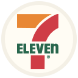
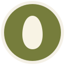

BREADLINE / BRAND TREATMENTS / VERSION 02A shared family. Distinct bakery identities.
Eight standalone SVGs · warm ivory rims · restrained brand colours · clean silhouettes
Each tile shows a large preview, then 48 px and 32 px checks. No operational status is baked into the artwork.

7-Eleven
Softened tricolour
Maxim’s Cakes
Redrawn rose · cocoa

arôme
Egg · olive
Saint Honore
App chef · terracotta

Yamazaki
Centred wheat · ochre

Maison Kayser
Negative monogram
The Peninsula
Favicon-inspired P